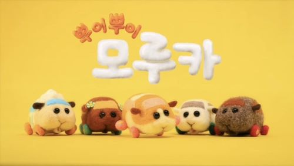
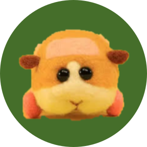
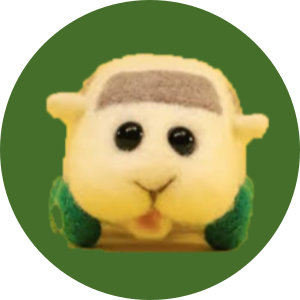
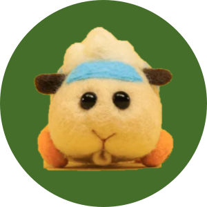
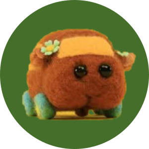
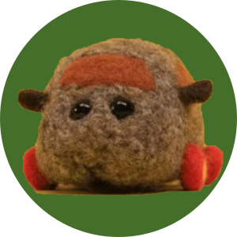
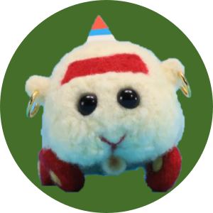

わくわく! びくびく? 大騒動!
두근두근! 오들오들? 대소동!
미사토 토모키(見里朝希) 감독의 스톱모션 애니메이션
- 기니피그가 자동차가 된 세상의 이야기를 다룬다. 모루카는 니들펠트 인형으로 제작되었으며 배경의 사람들은 소형 미니어처 피규어로 묘사된다.
- 모루카는 기니피그의 일본어인 모르모트(モルモット)와 자동차를 뜻하는 카(Car)와 합친 단어로 평소에 자동차로서 사용되지만 생물이기도 하다
- 울음소리는 미사토 감독이 실제로 키우는 기니피그 ‘츠무기’의 목소리를 녹음해서 사용한다.
- 바퀴가 달려있지만 사실은 '발'이며 굴러가지 않고 4족 보행을 하듯 뽈뽈거리며 이동한다. 모루카의 귀는 사이드미러의 역할을 하며 눈은 전조등의 역할을 한다.

포테토
느긋한 성격이지만
종종 운전자의 조종을 무시할 때가 있으며
도움이 필요한 이에게 거리낌 없기도 하다
당근을 제일 좋아한다

시로모
겁이 많은 모루카 중에서도 특히 겁이 많다
마음씨 좋은 운전자에게 응석을 부리지만
여러 트러블에 휘말려 들 때가 많다
테디를 누님처럼 따르고 있다
제일 좋아하는 것은 양상추

아비
성실하고 호기심이 왕성하다
초보자 운전 마크를 달고 있지만
언젠가 초보 운전을 졸업하길 꿈꾼다
고양이를 싫어한다.

초코
상큼하고 부드러운 성격 같지만
의외로 힘이 세다
깨끗한 것을 좋아하고 외모에도 신경을 쓴다
언젠가 No.1 고급 모루카가 되는 것이 꿈

테디
아무튼 무엇이든 잘 먹고 잘 움직인다
말괄량이에 겁이 없다
말썽꾸러기라서 주위의 걱정을 사고 있다

로즈
몸치장에 매우 공을 들인다
예전에 아비가 고양이를
구하는 모습을 보고 관심이 생겼다